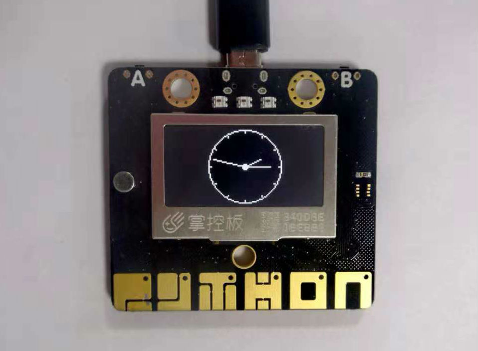

8. 数字模拟时钟
我们可以将OLED显示屏结合WiFi功能制作数字模拟时钟，通过WiFi连接网络来获取国际标准时间，将时间显示在OLED显示屏上。
8.1. 数字时钟
import ntptime,network # 导入国际标准时间、网络模块
from mpython import*
from machine import Timer # 导入计时模块
mywifi=wifi()
mywifi.connectWiFi("ssid","password") # WiFi设置
try:
ntptime.settime()
except OSError :
oled.DispChar("ntp链接超时,请重启!",0,20)
oled.show()
else:
def get_time(_): #定义时钟刷屏时间
t = time.localtime()
print("%d年%d月%d日 %d:%d:%d"%(t[0],t[1],t[2],t[3],t[4],t[5]))
oled.DispChar("{}年{}月{}日" .format(t[0],t[1],t[2]),20,8)
oled.DispChar("{}:{}:{}" .format(t[3],t[4],t[5]),38,25)
oled.show()
oled.fill(0)
tim1 = Timer(1)
tim1.init(period=1000, mode=Timer.PERIODIC, callback=get_time)
数字时钟是取代模拟表盘而以数字显示的钟表，它用数字显示此时的时间，案例中的数字时钟能同时显示时，分，秒。
mywifi=wifi()
mywifi.connectWiFi("ssid","password")
显示时间，需要先连接网络，因此需要设置WiFi名称及其密码。
提示
关于WiFi连接，可参见 wifi类 模块了解更多使用方法。
try:
ntptime.settime() #获取国际标准时间
except OSError :
oled.DispChar("ntp链接超时,请重启!",0,20)
oled.show()
为了更加清晰地了解网络连接的情况，您可以设置捕捉异常，并且显示一些提示语。首先获取国际标准时间，当获取异常时，显示提示语。
tim1 = Timer(1) #创建计时器
tim1.init(period=1000, mode=Timer.PERIODIC, callback=get_time)
创建一个计时器并初始化，将时间初始化为以1000毫秒为周期的计时模式，获取时间并返回计时器当前计数值（时间参数可参见 machine.Timer 模块）。
time.localtime()
获取本地时间，并将时间以8元组（包括年、月、日、时、分、秒）显示（可参见 time 模块了解更多）。
oled.DispChar("{}年{}月{}日" .format(t[0],t[1],t[2]),20,8)
oled.DispChar("{}:{}:{}" .format(t[3],t[4],t[5]),38,25)
oled.show()
oled.fill(0) #清屏
获取时间后，在OLED显示屏上显示出来。
注解
在坐标（20,8）位置显示年、月、日：t[0]对应年、t[1]对应月，t[2]对应日；在坐标（38,25）位置显示时、分、秒：t[3]对应时，t[4]对应分，t[5]对应秒。
{kind=link}
8.2. 模拟时钟
import ntptime,network
from mpython import*
from machine import Timer
mywifi=wifi()
mywifi.connectWiFi("ssid","password")
try:
ntptime.settime()
except OSError :
oled.DispChar("ntp链接超时,请重启!",0,20)
oled.show()
else:
clock=Clock(oled,64,32,30)
def Refresh(_):
clock.settime()
clock.drawClock()
oled.show()
clock.clear()
tim1 = Timer(1)
tim1.init(period=1000, mode=Timer.PERIODIC, callback=Refresh)
构建Clock对象：
clock=UI.Clock(64,32,30)
UI.Clock(x, y, radius)用于构建钟表对象，x、y为OLED显示屏上的起点坐标，radius为所画钟表的半径。
获取本地时间并设置模拟钟表时间：
clock.settime()
绘制钟表：
clock.drawClock()
清除钟表：
clock.clear()
清除时钟，也就是将显示在OLED显示屏上的时间清除以显示所获取的新时间，否则会导致各个时间值重叠显示在OLED上。
{kind=link}